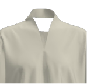
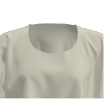

Each Make/Use garment made in this method is unique to both the fabric and the user. The length of a Make/Use cropped Tshirt can be altered to suit an individual's height or taste; a favourite fabric can be used to make the Cropped Tshirt and drastically alter its appearance; new iterations can be created by combining templates in ways dreamt up by the maker/user. The possibilities are literally endless.
- Using the Cropped Tshirt Grid file as a guide, mark half way between edges of fabric for Fabric Centre Line and ¼ Fabric Width (A) either side of this.
- Measure on your body the desired depth of sleeve (B) from your own shoulder down - this begins to determine how wide your sleeve is on your garment.
- Measure on your fabric 1 x B to Shoulder Line, and 1 x B from Shoulder Line to Sleeve Depth.
- Finally measure from shoulder to finished desired length and then minus B, for C.
- Mark horizontal and vertical lines with tailors chalk.
- The intersections of Fabric Centre Line and Shoulder Line, as well as ¼ fabric width and Sleeve Depth are key anchors for placing the templates.
- Print: Print out using a standard printer the files only A4 and/or A3 paper or card and cut out the dotted fill. Follow the instructions on the pages
- Lasercut: Download files and have laser cut on 2mm card according to lasercutter specifications.
- Line up desired templates with grid and follow instructions printed on them.